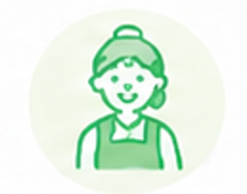
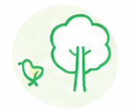
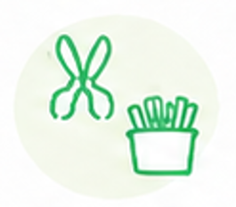

保育施設と、保育士・幼児教育者をつなぐ、気軽にはじめられるマッチングサービスです。
急な欠勤や行事前・早番遅番など
必要な場面に合わせて
いつでも柔軟に依頼できます。
求人の条件に合った人材が
自動でマッチングします。
採用の手間は一切かかりません。
気に入ったワーカーさんに
リピート勤務をオファーしたり
無料で引き抜くことも可能です。
最短お申込み当日に
アカウント発行可能
アドバイザーが求人掲載を
サポートいたします
相性のよいワーカーさんへ
どんどんお声かけください
実際に稼働が発生した分だけ、サービス利用料が発生します。
料金シミュレーションを見る有資格者のみのため、即戦力としてご活躍いただける人材とのマッチングが可能です。
行事前、土曜保育、早番・遅番、急な欠員など、必要なタイミングで活用できます。
求人内容のご相談からマッチング前後のフォローまで伴走するので、初めてでも安心です。



「運動会前の忙しい時期に、短時間だけサポートに入っていただけて本当に助かりました。事前に求人情報を丁寧にヒアリングしていただけたおかげで、条件通りの保育士さんに来ていただけました。」
「職員の急な体調不良で困っていたところ、求人掲載当日にマッチングし、すぐに勤務にきてくれました。派遣や紹介に比べて、スピード感があるので、いざという時のお守り代わりとして心強いです。」
「朝夕の忙しい時間帯だけ、経験豊富な方にサポートしていただけるようになり、正職員の負担が大きく減りました。必要な時間だけピンポイントで依頼できるのがとても便利です。」
「土曜保育のシフト調整に毎回苦労していましたが、タスタス保育さんにお願いしてからスムーズに人が確保できるようになりました。単発でも丁寧に対応してくれる方が多くリピーターになってくれている方もいるので、大変助かっています。」
まずは情報収集だけでもお気軽に資料をダウンロードしてください。